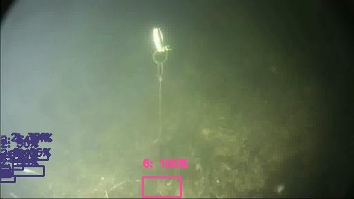
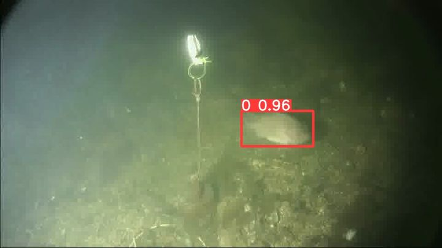
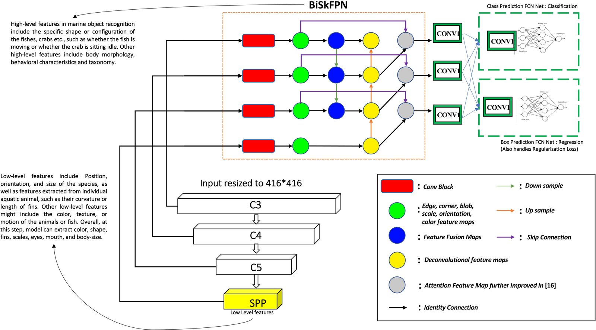
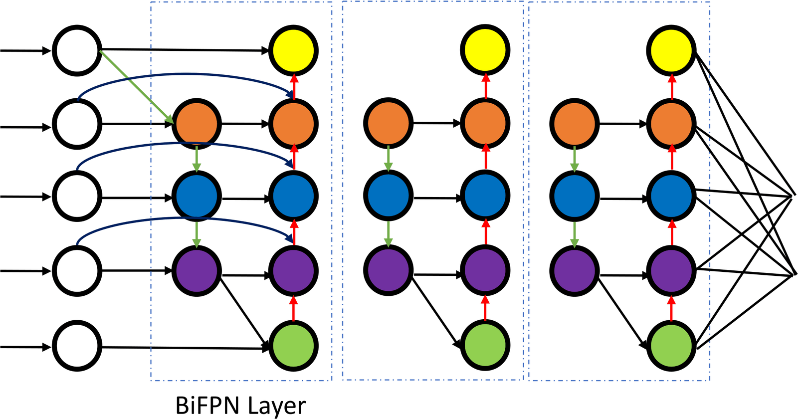
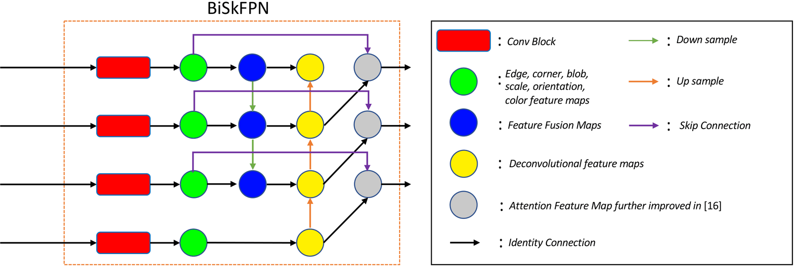
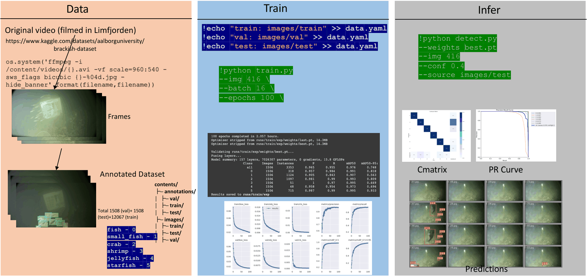
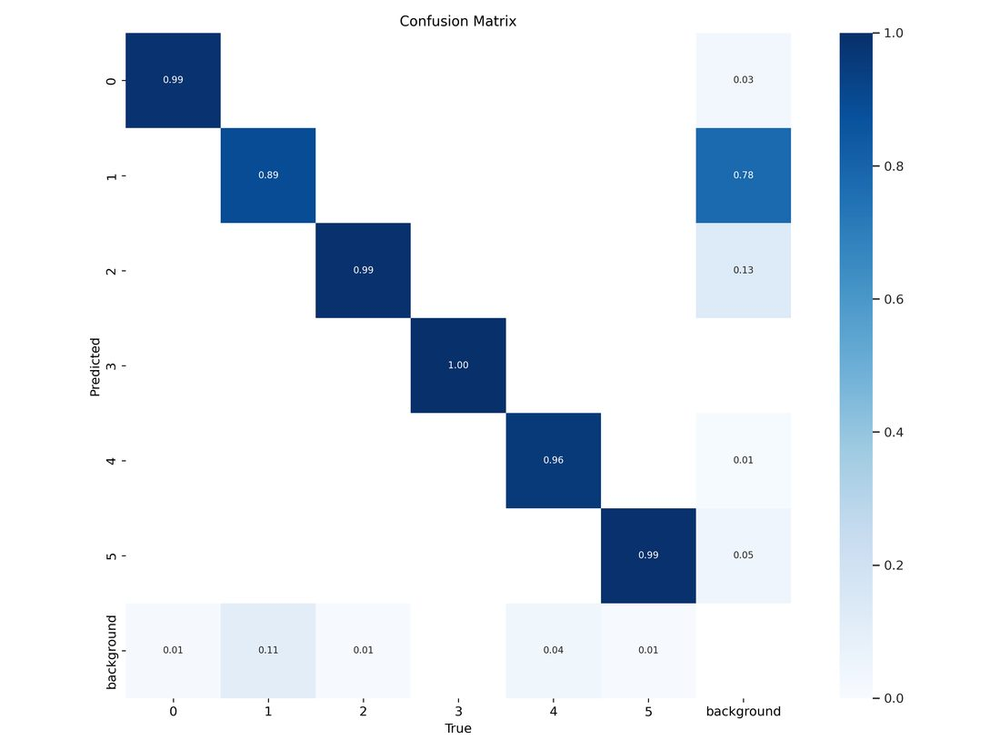
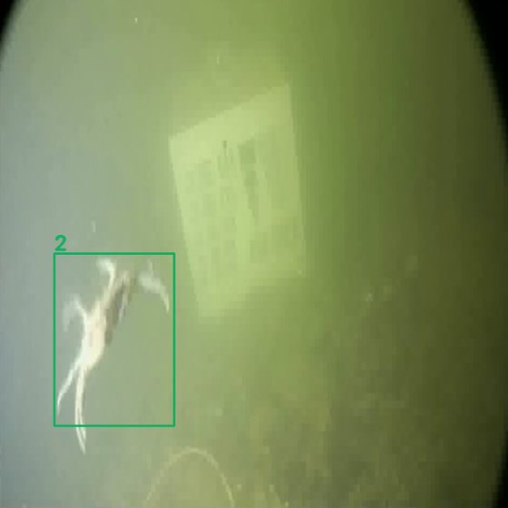
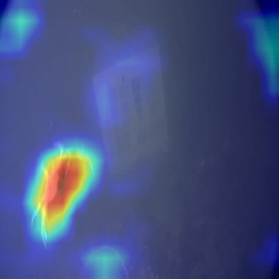

Improving underwater object detection using EfficientDet
Department of Computer Science and Communication, Østfold University College, Halden, Norway


Seawater is a hostile lens. It absorbs light, scatters it back into the camera and fills the frame with drifting particles. A detector has to find a shrimp a few dozen pixels wide in that.
Automated monitoring of marine life is how we count populations, notice invasive species, check the effect of fishing and pollution, and keep ships off the seabed. Cameras are cheap; people watching the footage are not. The catch is the footage itself. Brackish water carries silt and plankton, visibility changes with the tide and the weather, and a stationary camera sees the same rock, rope and calibration board for months while the animals it is meant to watch appear small, blurred and half-hidden.
The paper calls this a natural adversarial environment: the corruption is not crafted by an attacker, but it degrades a network in much the same way. Try it on real frames from the dataset.
Dashed outline: the frame as recorded. The number is the standard deviation of luminance, a simple proxy for how much edge information survives.
The effects are simple image operations for intuition, not a physical model of light in water. The frames themselves are unedited Brackish frames.
Turbidity pulls every pixel towards the colour of the water. Edges and textures, the cues a CNN relies on, fade first.
Small fish and shrimp cover a few dozen pixels and move between frames. They are the hardest classes for every detector trained here.
Monitoring runs on continuous video, often on the edge. That rules out slow two-stage detectors and favours compact one-stage models.
Three cameras bolted to a pillar of the Limfjord bridge between Aalborg and Nørresundby, nine metres below the surface, recorded by Aalborg University and annotated frame by frame.
The Brackish dataset (Pedersen et al., CVPR Workshops 2019) was filmed in real, murky coastal water rather than on a clear reef or in an aquarium, and its authors release 14,518 annotated frames. Videos are filed into folders by what they mostly show, and every frame carries bounding boxes for six object classes.
Every detector in this project consumes the same frames, but each toolkit wants its labels in a different file format. Step through the preprocessing, then drag the box to see what a single annotation looks like on disk.
A one-stage detector is three parts: a backbone that sees, a neck that mixes scales, a head that decides. DeepSeaNet keeps EfficientDet's recipe and proposes changes to each part.

A small shrimp is only visible in the high-resolution P3 map; a large fish fills the coarse P7 map. The neck decides how information flows between them. Each design below adds paths the previous one lacked. Hover an output node to light up every input it can draw from.
Hover an output node to trace it.


EfficientNet replaces ordinary convolutions with mobile inverted bottleneck blocks (MBConv). A 1×1 conv expands the channels, a depthwise conv filters each channel on its own, and another 1×1 conv projects back down. The paper also argues for the Swish activation over ReLU. Both choices are easy to feel with numbers.
Swish(x) = x · σ(βx). It dips slightly below zero and has a non-zero gradient for negative inputs, so weak, noisy activations are damped rather than cut to zero.
For every anchor box the class network predicts species probabilities and the box network predicts offsets. Training minimises a weighted sum: a classification term, a box regression term weighted by α, and an ℓ2 penalty on the weights. The paper writes it as
The EfficientDet-Lite0 run in the repository logged each of those terms for all 350 epochs, so the balance can be read straight off the training log. In that implementation α = 50 and β = 1.
Six detectors, one dataset, five repetitions each. This section shows the paper's own tables; the next one shows what the committed runs in the repository logged.
Column names follow the paper, which labels classes by Brackish video category. Darker cells mean higher mAP. See the notes in section 7 on how this table relates to Table 5.
| Setting | YOLOv5 | EfficientDet | Detectron2 |
|---|---|---|---|
| Epochs | 350 | 350 | 350 |
| Backbone | CSP-Darknet53 | EfficientNet | ResNet |
| Neck | PANet | BiFPN | RPN + FPN |
| Head | YOLOv3-like | YOLOv3-like | RPN + RCNN |
| Train / val / test | 7000 / 2000 / 1000 | 7000 / 2000 / 1000 | 7000 / 2000 / 1000 |
| Annotations | YOLO TXT | COCO JSON | COCO JSON |
| Optimiser | SGD, lr 0.1 | SGD + Adam, adaptive | SGD + Adam, adaptive |
| Activation | Leaky ReLU | Swish (neck), Leaky ReLU (head) | Sigmoid (box), softmax (class) |
Hardware listed in the paper: AWS EC2 p3dn instance, NVIDIA V100 GPUs, 96 vCPUs, 31.2 USD per hour.
The related-work study reviews five EfficientDet variants built for other hard imaging domains. Each contributed an idea, or a warning, for water.
Attention and residual deformable 3D convolutions damp cloud and haze noise in remote sensing.
100 mAP · Xu et al., 2022
YOLOv5 against EfficientDet: EfficientDet scores higher, YOLOv5 generalises to more examples.
91 mAP · Mekhalfi et al., 2021
Anchor aspect ratios found by K-means with Jaccard distance for extreme box shapes.
89.65 mAP · Medak et al., 2021
Multilayer attention with deep feature fusion to separate ship types in optical imagery.
97.05 mAP · Qin et al., 2021
Compound-scaled EfficientDet that detects garments and landmarks in 42 ms per image.
68.6 mAP · Kim et al., 2021

The repository keeps one training run per detector, with logs, weights and saved predictions. Everything in this section is parsed from those files.
| Run | Toolkit | Data | Input | Schedule | Params | AP@0.5 | AP@[.5:.95] |
|---|---|---|---|---|---|---|---|
| EfficientDet-Lite0 | TFLite Model Maker | Roboflow, test 1,000 | 320² | 350 ep, batch 64 | 3.24 M | 0.898 | 0.601 |
| YOLOv5s | Ultralytics YOLOv5 | own split, val 1,506 | 416 | 100 ep, batch 16 | 7.04 M | 0.976 | 0.748 |
| YOLOv8s | Ultralytics 8.0.20 | Roboflow, val 2,000 | 800 | 100 ep, batch 16 | 11.13 M | 0.988 | 0.836 |
| Faster R-CNN X101-FPN | Detectron2 | Roboflow, test | default | 300 iter, batch 4 | — | 0.433 | 0.204 |
Splits and input sizes differ between runs, so compare shapes and orders of magnitude rather than third decimals. The EfficientDet-Lite0 row is the float model; the exported TFLite file scores 0.863 and 0.561. YOLO rows are the validation scores at the last epoch of the committed run.
All four detectors find starfish, which rarely move on the seabed, the easiest class. For the three one-stage detectors small fish, which swim through the frame in groups, are the hardest; the short Detectron2 run struggles most with shrimp. The strict metric averages over IoU thresholds from 0.5 to 0.95, so it rewards tight boxes rather than rough hits. The committed 100-epoch YOLOv8s run saved per-class results only as plots, so its dots come from the shorter 25-epoch run whose validation table is printed in the notebook.
The two toolkits number classes differently: YOLOv5 from 0, the Roboflow export used for YOLOv8 from 1. The order is the same.

Two further ideas in the paper: train on deliberately perturbed frames so the model shrugs off noise, and open the black box to check it looks at the animal, not the water.
A universal adversarial perturbation (UAP, Moosavi-Dezfooli et al., 2017) is a single, image-agnostic noise pattern, small enough to be nearly invisible, that pushes a network towards wrong predictions on most inputs. The paper adds UAP noise to training frames in a curriculum, a form of adversarial learning, and reports 98.63% mAP for EfficientDet and 98.04% for YOLOv5 trained this way.
The key word is universal: the same pattern is added to every frame. The panel below shows what that means at different strengths.
Class activation maps colour each pixel by how much it drives the network's output. GradCAM++, the method the paper describes, weights the last convolutional feature maps by positive gradients of the class score:
The CAM notebooks in the repository use EigenCAM from pytorch-grad-cam, which needs no gradients:
it projects the activations of one layer onto their first principal component. The maps below are the images
those notebooks saved.


What a reader should know before building on these numbers.
| Detector | Paper, Table 5 mean | Committed run, AP@0.5 | Committed run setup |
|---|---|---|---|
| EfficientDet | 98.6 ± 1.0 | 89.8 (test), 86.3 as TFLite | EfficientDet-Lite0, TFLite Model Maker, 350 epochs |
| YOLOv8 | 98.2 ± 0.17 | 98.8 (val) | YOLOv8s, 100 epochs, 800 px |
| YOLOv5 | 97.6 ± 0.61 | 97.6 (val) | YOLOv5s, 100 epochs, 416 px |
| Detectron2 | 95.2 ± 1.4 | 43.3 (test) | Faster R-CNN X101-FPN, 300 iterations |
Scope of the repository.
efficientdet_lite0 specification from TFLite Model Maker.
Code for the BiSkFPN neck, the Swish changes, UAP generation and adversarial training is not included.torch.hub and run EigenCAM. They differ in
the checkpoint they download and the confidence threshold, not in detector architecture.4_Detectron2.ipynb for classes 1–6 (28.8, 14.6, 8.6, 3.9, 25.7, 40.7), while Table 5 reports 95.2 for the same model.
The two tables therefore do not report one consistent metric.Neighbouring frames leak. Frames are cut from continuous video, and consecutive frames are nearly identical. A random split puts near-duplicates into both training and test sets, which inflates every score. Splitting by video would give a harder and more honest estimate.
AP@0.5 is near its ceiling. Several detectors pass 0.97, where differences shrink to noise. The stricter AP@[.5:.95], and per-class numbers for the rare shrimp and jellyfish classes, separate models far better.
One site, one camera. Every frame comes from the same fixed rig in Limfjorden. Nothing here shows transfer to other water, depths, lighting or cameras.
Classes are imbalanced. Shrimp and jellyfish together make up only 3–4% of the validation boxes. A single mean hides how a model does on exactly the animals that are hardest to monitor.
Every experiment is a notebook that runs top to bottom on Google Colab or AWS SageMaker.
github.com/s4nyam/efficientdet-advml
@inproceedings{Jain2024DeepSeaNet,
author = {Jain, Sanyam},
title = {DeepSeaNet: Improving Underwater Object Detection using EfficientDet},
booktitle = {2024 4th International Conference on Applied Artificial Intelligence (ICAPAI)},
year = {2024},
pages = {1--11},
address = {Halden, Norway},
publisher = {IEEE},
doi = {10.1109/ICAPAI61893.2024.10541265}
}